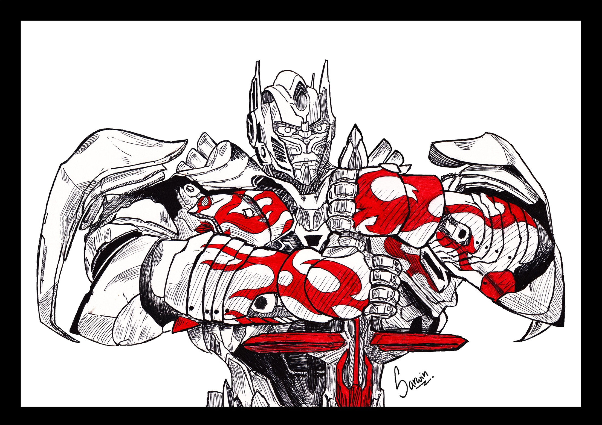

A room for drawings I want to archive properly, with enough context to remember why each piece stayed with me.
This first wall is mostly anime and pop-culture character work drawn on A4 sheets. It is only one shelf of the page, though. Later I want this archive to hold portrait studies, sketchbook fragments, and quieter experiments too.

- Current shelf
- Anime drawings first, then a separate shelf for other icons, with kirigami prepared as its own square-format room.
- Format
- Every piece here is built from A4 portrait or landscape compositions, so the layout respects that ratio.
- Viewer
- Open any drawing for a larger post-style view with a side note rail, not just a flat lightbox.
The main wall stays focused on anime character work, with each piece opening into a fuller post-style view.
Tap or click any drawing to open the larger post view. On wider screens the context sits to the right like a desktop post; on smaller screens it stacks underneath without losing the image.
A second wall for the non-anime obsessions that still belong in the archive.
Knight Prime and Ozzy / Randy now live on their own shelf so this part can grow without interrupting the anime wall.
A separate square-format room is ready for the kirigami work you add next.
This section is tuned for square compositions, so when the paper-cut images arrive they can sit in their own rhythm instead of being forced into the A4 drawing layout.
Kirigami pieces coming next
This wall is reserved for cut-paper work, layered compositions, and anything that wants a more geometric square frame.
- Format
- Mostly square images so the page treats kirigami as its own visual language.
- Focus
- Cut-paper layering, negative space, and cleaner shape logic than the drawing shelves.
- Ready for later
- The section is already in place, so adding the images later becomes a content pass instead of another layout rebuild.
The archive gets more useful when each drawing remembers what decision made it stronger.
I do not want this page to behave like a dump of finished files. I want it to remember what changed between sketch and final: where the silhouette finally read, where the color stopped fighting the subject, or where a quieter crop said more than extra detail.
That is also why the fullscreen view has a right-side note rail. It keeps the drawing and the reason behind it in the same place, which is much closer to how I actually think about the work.
- Does the likeness land early?
- If the face only works after rendering, the structure probably was not there yet.
- Is the pose carrying real weight?
- Good gesture saves more drawings than extra detailing ever will.
- Did restraint help?
- Some of the strongest pieces here worked because I stopped before flattening them.